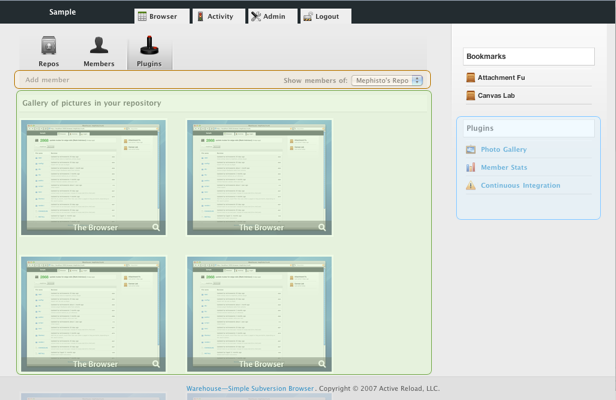
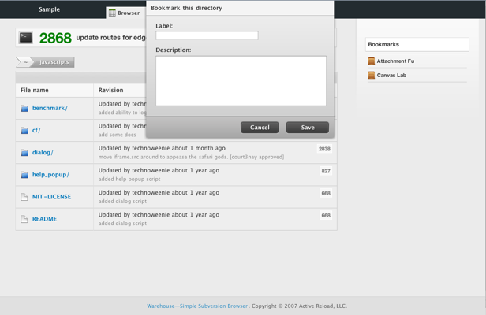

Tentative Plugin Discussion I'm in ur warehouse app writin mah plugins.
Plugin Focal Points
Plugins have 3 main focal points: Sidebar, Canvas, and the Control Bar. Plugins are either public or private?
Sidebar (Blue)
The sidebar is how plugins are accessed. A sidebar item consist of two UI parts, an icon and a label.
Canvas (Green)
The canvas is where a plugins views are rendered too. It is the main focal point of a plugin.
Control Bar (Orange)
The control bar is where a plugins operations are linked. For example, maybe you have a user stats plugin, when you click on a users name, it shows you the full stats for a user. In the control bar you could link back to the plugin's main page. This could also contain links like new, edit, etc.
Plugin Input and Forms
Editing and manipulating plugin data is done through sheets. Sheets always have two buttons, Save, Create, Add, etc and cancel.
For example, if the Gallery plugin had a configuration option to set what types of images were to be shown in the gallery, a Configure link could be found in the control bar that would invoke a sheet. We should create a Ruby helper for creating sheets, the UI is fairly easy.